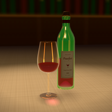

Pourfect Sommelier — the art of the equal pour
ボトルに残ったワインを、2〜7 名様のグラスに、人数分ぴったり注ぎ分けるゲームです。 数字（ml）は出ません。ボトルの中の量とグラスの形を目で見て注ぎます。
注ぐ前に、ボトルを指で回して中の量を見られます。12 ステージでひと巡りし、そのあとは許容を狭めてくり返します。 記録は、ライフがなくなるまでに何組のお客様にご満足いただけたか、です。
画面の右上の ♪ のボタンで、効果音と BGM と振動をまとめて切りかえられます。
画面の上端にバナー広告が出ます。また、3 回遊び終えるごとに 1 回、次の回を始めるときに全画面の広告が出ます。遊んでいる途中で全画面の広告が出ることはありません。
タイトルのボタンの下の「広告を消す」から、¥300 の買い切りで広告を消せます。遊べる内容は変わりません。 前に買ったことがあれば、同じ画面の「購入を復元」で戻ります（アプリを入れ直したときは、起動すると自動で戻ります）。
初めて起動したときに 1 回だけ出る、iOS の確認です。どちらを選んでも、遊べる内容は変わりません。あとから「設定 → プライバシーとセキュリティ → トラッキング」で変えられます。
ライフがなくなって遊び終えた画面の「ランキングに載せる」から、名前を決めて載せられます（1 組でもご満足いただけた回）。 やめるときは、ランキングの画面で自分の名前（名前を変える）を押し、「ランキングをやめて記録を消す」を押してください。名前と記録がサーバーから消えます。 ほかの人の名前を押すと、「通報する」「この人を表示しない」を選べます。
遊び方は同じで、ランキングも同じ一覧です。iOS アプリには振動があり、通信なしでも遊べます（広告・購入・ランキングには通信を使います）。
記録は端末の中にだけあり、別の端末やブラウザ版へは引き継げません。
不具合やご意見は、次のアドレスまでお知らせください。端末の機種と iOS のバージョンを添えていただけると助かります。